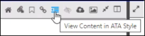
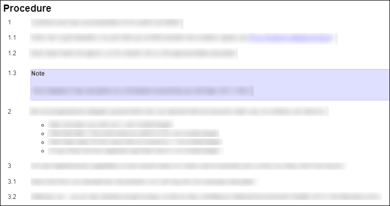

The View Content in ATA Style icon lets you see the structure of the procedure in the ATA style or the S1000D format.
Note: The view content feature is enabled when the checkbox is checked for the
Enable view S1000D manual in ATA style? parameter inside the
Configuration pane.
Note: This icon is visible for S1000D publications only.
In the Content pane you will see a View Content in ATA
Style icon. See the figure that follows:

View Content in ATA Style Icon and Statement
When you click the View Content in ATA Style icon the format will
change from ATA style to the S1000D style. See the figures that follow:

ATA Style Format Example

S1000D Style Format Example